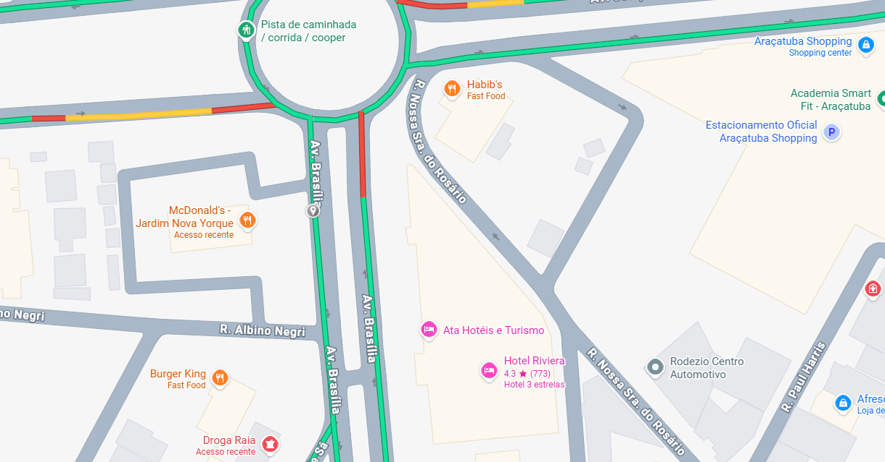
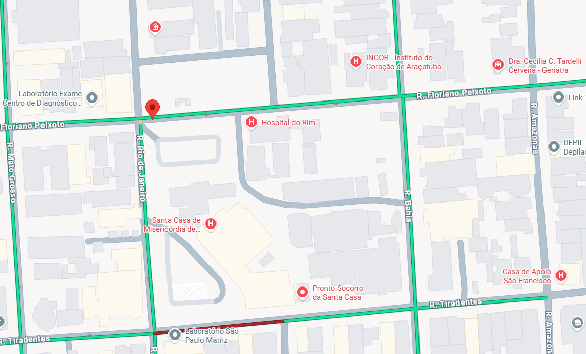
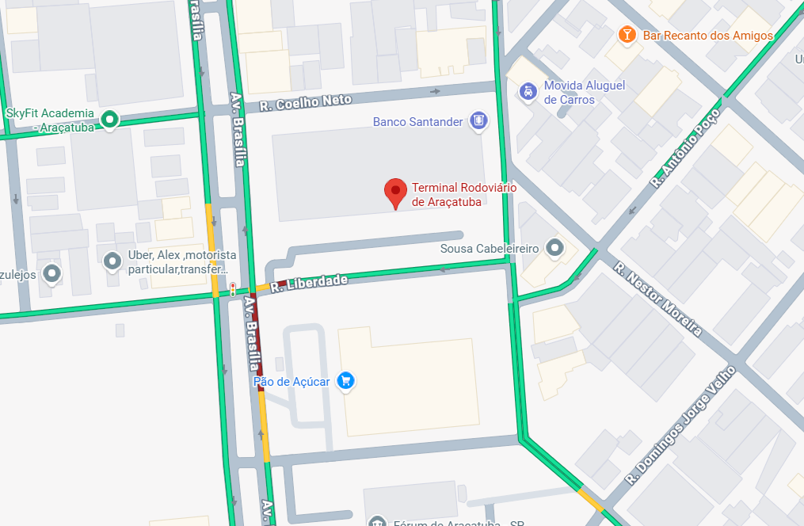
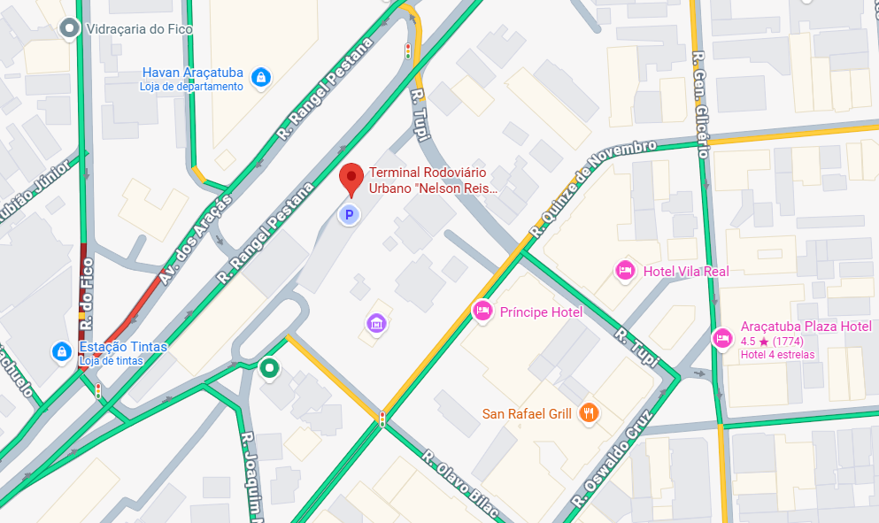

Rota 02 · McDonald’s, Jardim Nova Yorque

Ponto: Av. Brasília, 990–992, Vila São Paulo · Coordenadas: -21.222410, -50.437406
Ver detalhes da rota 02PONTOS DE REFERÊNCIA DO PROTÓTIPO
Os mapas localizam os pontos de referência. As linhas e distâncias são exemplos fictícios.

Ponto: Av. Brasília, 990–992, Vila São Paulo · Coordenadas: -21.222410, -50.437406
Ver detalhes da rota 02
Coordenadas: -21.20536779799727, -50.42998107951613
Ver detalhes da rota 01
Coordenadas: -21.216537795105975, -50.437066600325494
Ver detalhes da rota 03
Coordenadas: -21.203012193531595, -50.438493060257365
Ver detalhes da rota 04